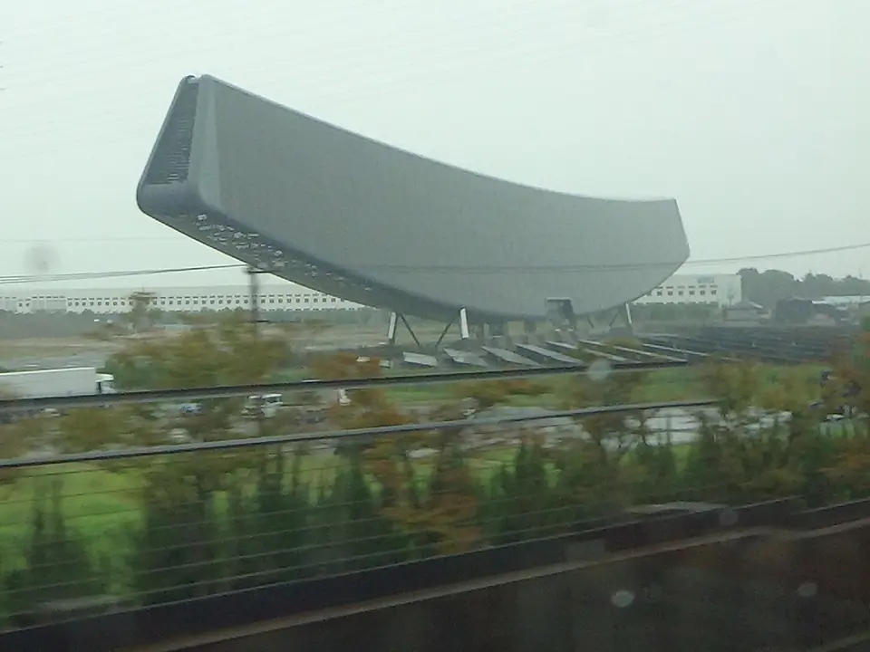
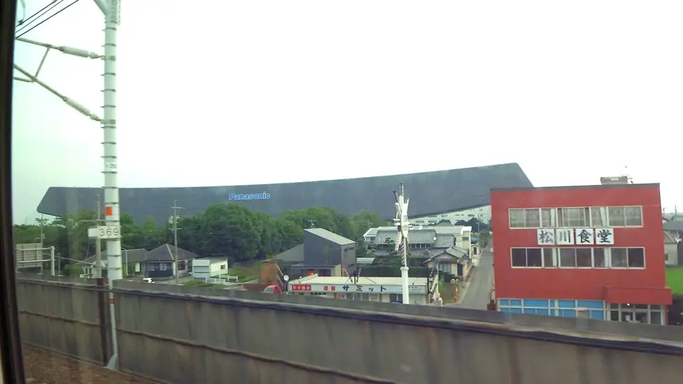

TOKAIDO SHINKANSEN WINDOW VIEW
A solar ship above the fields: Solar Ark
A solar ship, soon to disappear.

- Section
- Nagoya → Gifu-Hashima
- Seat side
- Seat E · mountain side
- Timing
- About 103 minutes after leaving Tokyo on a Nozomi train
- Photos
- 4 photos
What is Solar Ark?
Solar Ark stands on the grounds of Sanyo Electric's former Gifu plant in Anpachi Town, Gifu Prefecture, and was completed in December 2001. The project began after a defect was identified in some residential solar modules Sanyo had sold in 2000. As part of investigating the root cause and preventing recurrence — and rebuilding public trust in photovoltaics — Sanyo tied the effort to its 50th-anniversary commemoration, according to publicly announced background. The structure was designed by Yoshio Taniguchi and Associates and built by Obayashi Corporation. Its softly upswept ship-like form carries roughly 5,046 solar panels, with a rated peak output of about 630 kW and reported annual output of around 530,000 kWh (comparable to the electricity used by about 150 average households).
More: Kyodo News: Solar Ark demolition announced (Japanese only)Wikipedia: Solar ArkAnpachi Town: Solar Ark monument (Japanese only)@letus10: Solar Ark from the Shinkansen
If you are traveling from Tokyo toward Shin-Osaka, start watching the Seat E · mountain side window as you approach Nagoya → Gifu-Hashima. If you are traveling toward Tokyo, the order is reversed.
Why the Panasonic logo disappeared, and what happens next
In 2011, Sanyo became a wholly owned subsidiary of Panasonic, and its solar and battery businesses were reorganized in the following years. Solar Ark carried a large 'Panasonic' logo for a long time, but as business structures shifted it was removed, and the monument now stands without branding. The photos on this page include a 2017 reference image from when the Panasonic logo was still in place.
The current owner has informed Anpachi Town of plans to dismantle Solar Ark, citing aging infrastructure and maintenance costs. News reports have said demolition could start as early as September 2026, but as of writing, no official schedule, work period or post-demolition use has been announced. Given its 25-year run as a trackside icon of the Tokaido Shinkansen, many locals and long-time riders are already voicing regret.
Timing-wise, Solar Ark appears on the Seat E side after passing Kiyosu Castle, a little before the Kiso Three Rivers and before Gifu-Hashima Station. At speed, it lasts only a few seconds to about ten. On sunny days, the blue glint of its panels stands out sharply, and the huge arched silhouette can be found even from a distance.
Location at a glance
Open mapSwitch between the spot and the Shinkansen viewpoint.
How to catch Solar Ark
1. Choose the window first
As you approach Nagoya → Gifu-Hashima, start watching from Seat E · mountain side. Use Live Guide while riding, or the map on this page before you board.
The clearest view lasts only a few seconds. Decide the seat side and window direction before it arrives rather than reaching for your camera late.
2. Highlights
Once you pass Kiyosu Castle, focus a little farther out on the Seat E side across the fields. A long blue-glinting arch appears more than 10 meters above the ground. Sunny days make the panel reflections especially sharp. Watching it while knowing 'the number of trips left to see this may be limited' turns the moment into something special.
Solar Ark in photos



 Related
Mt. Kinsho
Related
Mt. Kinsho
 Related
Kiyosu Castle
Related
Kiyosu Castle
 Related
Kirin Beer Factory
Related
Kirin Beer Factory